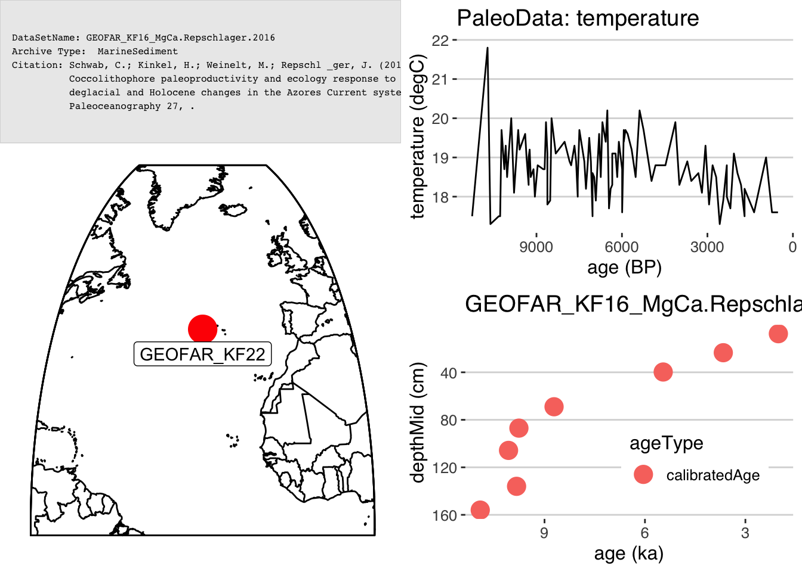
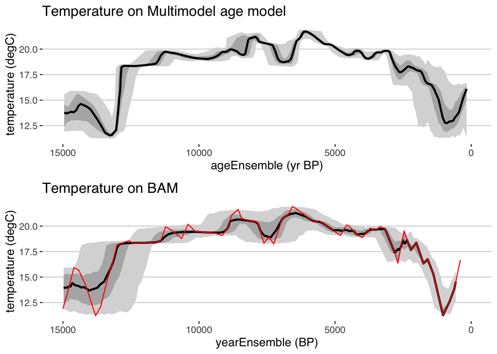

Chapter 8 Age-Uncertain Principal Component Analysis
This vignette showcases the ability to perform principal component analysis (PCA, also known as empirical orthogonal function (EOF) analysis. Data are from the Arctic 2k compilation, which we load here:
FD <- lipdR::readLipd("http://lipdverse.org/geoChronR-examples/arc2k/Arctic2k.zip") ## [1] "reading: Arc-Agassiz.Vinther.2008.lpd"
## [1] "reading: Arc-Austfonna.Isaksson.2005.lpd"
## [1] "reading: Arc-CampCentury.Fisher.1969.lpd"
## [1] "reading: Arc-Crete.Vinther.2010.lpd"
## [1] "reading: Arc-DevonIceCap.Fisher.1983.lpd"
## [1] "reading: Arc-Dye.Vinther.2010.lpd"
## [1] "reading: Arc-GISP2.Grootes.1997.lpd"
## [1] "reading: Arc-GRIP.Vinther.2010.lpd"
## [1] "reading: Arc-Hvtrvatn.Larsen.2011.lpd"
## [1] "reading: Arc-LakeC2.Lamoureux.1996.lpd"
## [1] "reading: Arc-LakeDonardBaffinIsland.Moore.2001.lpd"
## [1] "reading: Arc-LakeLehmilampi.Haltia-Hovi.2007.lpd"
## [1] "reading: Arc-LakeNataujrvi.Ojala.2005.lpd"
## [1] "reading: Arc-LowerMurrayLake.Cook.2008.lpd"
## [1] "reading: Arc-NGRIP1.Vinther.2006.lpd"
## [1] "reading: Arc-NGTB16.Schwager.1998.lpd"
## [1] "reading: Arc-NGTB18.Schwager.1998.lpd"
## [1] "reading: Arc-NGTB21.Schwager.1998.lpd"
## [1] "reading: Arc-Renland.Vinther.2008.lpd"8.1 Make a map
First, let’s take a quick look at where these records are located. geoChronR’s mapLipd function can create quick maps:
mapLipd(FD,map.type = "line",projection = "stereo",f = 0.1)
More map projections are available too. A list is available here:
?mapproject
8.2 Prepare the data for PCA
8.2.1 Grab the age ensembles for each record.
Now we need to “map” (I know, a different kind of mapping) the age ensembles to paleo for all of these datasets. We’ll use purrr::map for this, but you could also do it with sapply(). In this case we’re going to specify that all of the age ensembles are named “ageEnsemble,” and that they don’t have a depth variable because they’re layer counted.
FD2 = purrr::map(FD,
mapAgeEnsembleToPaleoData,
strict.search = TRUE,
age.var = "ageEnsemble",
depth.var = NULL )Now extract all the “timeseries” into at “TS object” that will facilitate working with multiple records.
TS <- extractTs(FD2)and filter the TS object to only include variables that have been interpreted as temperature. Here we’ll use lipdR::filterTs to filter the TS object.
TS.filtered <- filterTs(TS,"interpretation1_variable == T")OK, let’s make a quick plot stack to see what we’re dealing with.
The lipdR::tidyTs function will convert a TS into a long, “tidy” data.frame, where each observation has a row in a data.frame. This can be verbose, but is also useful for data analysis in the tidyverse framework.
tidyDf <- lipdR::tidyTs(TS.filtered,age.var = "year")A tidy data.frame is also the input for the plotTimeseriesStack function in geoChronR.
plotTimeseriesStack(tidyDf,
color.var = "paleoData_variableName",
color.ramp = c("DarkBlue","Orange","Black","Dark Green"),
line.size = .1,
fill.alpha = .05,
lab.size = 2,
lab.space = 3)
Now bin all the data in the TS from 1400 to 2000, an interval of pretty good data coverage, into 5 year bins.
binned.TS <- binTs(TS.filtered,bin.vec = seq(1400,2000,by=5),time.var = "ageEnsemble")We’re now ready to calculate the PCA!
8.3 Calculate the ensemble PCA
Calculate PCA on each ensemble member:
pcout <- pcaEns(binned.TS)That was easy (because of all the work we did beforehand). But before we look at the results let’s take a look at a scree plot to get a sense of how many significant components we should expect.
plotScreeEns(pcout)
It looks like the first two components, shown in black with gray uncertainty shading, stand out above the null model (in red), but the third and beyond look marginal to insignficant. Let’s focus on the first two components.
8.3.1 Plot the ensemble PCA results
Now let’s visualize the results. The plotPcaEns function will create multiple diagnostic figures of the results, and stitch them together.
plotPCA <- plotPcaEns(pcout,TS = TS.filtered,map.type = "line",projection = "stereo",bound.circ = T,restrict.map.range = T,f=.1,legend.position = c(0.5,.6),which.pcs = 1:2,which.leg = 2)
Nice! A summary plot that combines the major features is produced, but all of the components, are included in the “plotPCA” list that was exported.
For comparison with other datasets it can be useful to export quantile timeseries shown in the figures. plotTimeseriesEnsRibbons() can optionally be used to export the data rather than plotting them. The following will export the PC1 timeseries:
quantileData <- plotTimeseriesEnsRibbons(X = pcout$age,Y = pcout$PCs[,1,],export.quantiles = TRUE)
print(quantileData)## # A tibble: 200 x 6
## ages `0.025` `0.25` `0.5` `0.75` `0.975`
## <dbl> <dbl> <dbl> <dbl> <dbl> <dbl>
## 1 1408. -0.0633 0.0371 0.0945 0.154 0.274
## 2 1410. 0.0235 0.0898 0.131 0.170 0.240
## 3 1413. 0.0597 0.127 0.169 0.208 0.284
## 4 1416. 0.109 0.181 0.211 0.241 0.291
## 5 1419. 0.0875 0.146 0.175 0.204 0.246
## 6 1422. -0.0298 0.0465 0.0876 0.124 0.194
## 7 1425. -0.0352 0.0129 0.0401 0.0689 0.109
## 8 1428. -0.0977 -0.0296 0.0113 0.0472 0.116
## 9 1431. -0.0723 -0.00981 0.0283 0.0651 0.129
## 10 1434. -0.0700 0.00573 0.0503 0.0880 0.157
## # … with 190 more rows8.4 Ensemble PCA take two - using a covariance matrix.
Let’s repeat much of this analysis, but this time we’re only going to analyze the \(\delta^{18}O\) data, keep them in their native values, and use a covariance matrix in the PCA analysis.
First, it looks like let’s look at all the names in the TS
var.names <- pullTsVariable(TS, "variableName")Oops - looks like we didn’t use quite the correct name. Next time use:
var.names <- pullTsVariable(TS, "paleoData_variableName")and take a look at the unique variableNames in the TS
unique(var.names)## [1] "d18O" "year"
## [3] "ageEnsemble" "thickness"
## [5] "X_radiograph_dark_layer" "massacum"OK. Let’s filter the timeseries again, this time pulling all the \(\delta^{18}O\) data.
d18OTS = filterTs(TS,"paleoData_variableName == d18O")And we’ll tidy up the data for a plotStack
tidyd18O <- tidyTs(d18OTS,age.var = "year")Before plotting, let’s do some tidyverse gymnastics to reorder the data by the length of the observations
#arrange the tidy dataframe by record length
tidyd18O <- tidyd18O %>% #use the magrittr pipe for clarity
group_by(paleoData_TSid) %>% #group the data by column
mutate(duration = max(year) - min(year)) %>% #create a new column for the duration
arrange(duration) # and arrange the data by durationAgain we’ll use plotTimeseriesStack to show all the data, now nicely arranged.
plotTimeseriesStack(tidyd18O,
color.var = "paleoData_variableName", # Color the data by the variable name (all the same in the case)
color.ramp = "DarkBlue", #colors to use
line.size = .1,
fill.alpha = .05,
lab.size = 2,
lab.space = 2,
lab.buff = 0.03)
Well that sure is nice and tidy. Again, it looks like binning from 1400-2000 will give us good data coverage.
binned.TS2 <- binTs(d18OTS,bin.vec = seq(1400,2000,by=5),na.col.rm = T)And calculate the ensemble PCA, this time using a covariance matrix. By using a covariance, we’ll allow records that have larger variability in \(\delta^{18}O\) to influence the PCA more, and those that have little variability will have little impact. This may or may not be a good idea, but it’s an important option to consider when possible.
pcout2 <- pcaEns(binned.TS2,pca.type = "cov")Once again, let’s take a look at the scree plot:
plotScreeEns(pcout2)
Once again, the first two components look good, but the third also looks to be likely above the 95% significance level, so let’s include the third PC in our plot this time as well.
plotPCA2 <- plotPcaEns(pcout2,
TS = d18OTS,
which.pcs = 1:3,
map.type = "line",
projection = "stereo",
bound.circ = T,
restrict.map.range = T,
f=.2)
Using only the \(\delta^{18}O\) data and a covariance matrix, we get somewhat different results. The first PC timeseries looks similar to the first one, but the spatial pattern is somewhat difference, with stronger loadings in the northeast. The second PC looks to be a new pattern, although the third resembles PC2 from the first analysis.